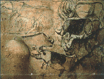

| |
|
1940
Karl
Landsteiner kandaki Rh faktörünü keþfetti. Ýlk kez
tespit edildiði bir maymun türünün (Rhesus) adýný taþýyan
bu faktör, anne ve dölütün kanýnda bir dizi tepkimeye
yol açarak düþük, ölü doðum ve yeni doðan bebekte
öldürücü bir hastalýða neden oluyordu.
|
| 1941
Helene
Taussig ve Alfred Blalock "mavi bebek sendromu"
olarak bilinen bozuklukla doðan bebekler için cerrahi
tedavi yöntemi geliþtirdiler. Bu bebeklerin cildi kanda
yeterli oksijen olmadýgý için mavi-mor bir renk alýyordu.
Ýlk ameliyatý 1944 yýlýnda uygulayan Blalock, bu yöntemle
birçok yaþam kurtardý.
|
| 1941
Albert
Lipmann canlý hücrede enerji aktarýmý kuramýný açýkladý
ve ATP(adenozintrifosfat)'nin oynadýðý temel rolü kanýtladý.
Buna göre canlý sistemlerdeki biyokimyasal tepkimeler,
termodinamik yasalarýn dýþýnda deðildir; enerji
yoktan var edilemez. Hücreler enerji bakýmýndan zengin
moleküller taþýdýðý için enerji tüketen tepkimeler
oluþur. Bu moleküllerin en bilineni de ATP'dir.
|
| 1942
Wernher
von Braun ilk baþarýlý roket deneyini yaptý. Von
Braun'un çalýþmalarý Almanya'da askeri amaçlý
roketlerin yapýmýnda kullanýldý. Ýleriki yýllarda
ABD'de kurulan NASA da uzay çalýþmalarý için
gereksinim duyduðu roket teknolojisini Von Braun'un çalýþmalarýndan
elde edecektir. |
| 1943
Selman
Waksman, verem hastalýðýnýn tedavisinde etkili ilk
antibiyotik olan streptomisini buldu. Waksman ayný
zamanda antibiyotik terimini kullanan ilk kiþiydi.
|
|
| 1940
ABD'de
ilk renkli TV yayýnlarý baþladý. |
| 1940
Millan
ve Abelson, uranyumu nötron bombardýmanýna tutarak
ilk yapay element olan neptünyumu elde ettiler. |
| 1940
Fransa'da
dört genç rastlantýsal olarak Lascaux Maðarasý'ný
keþfetti. Maðaranýn önemi binlerce yýl öncesinden
kalma duvar resimleriyle dolu olmasýydý.

Sonralarý yapýlan karbon-14
testi sonucunda bu magaranýn MÖ 15 000-13 000 yýllarýndan
kalmýþ olduðu anlaþýlacaktý.
|
| 1942
 3
Aralýk'ta Enrico Fermi, Chicago Üniversitesi'nde atom
pili adýyla tanýnan uranyum- yakýtlý grafitli ilk nükleer
reaktörü yaptý. 3
Aralýk'ta Enrico Fermi, Chicago Üniversitesi'nde atom
pili adýyla tanýnan uranyum- yakýtlý grafitli ilk nükleer
reaktörü yaptý.
|
|
|